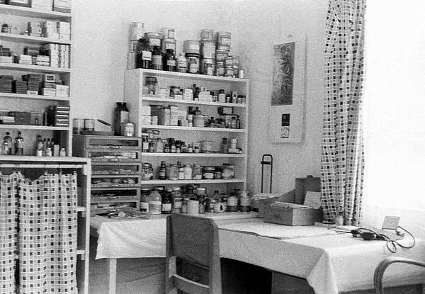

Das Schubladenschränkchen links lief unter dem Namen "MEZ-Kästchen", da es für Garnrollen der Freiburger Firma MEZ gemacht war. Einmal im Monat musste die Famile antreten, und Tabletten in die handgeklebten Tütchen abfüllen. Die Auswahl war beschränkt, die Abzählverpflichtungen unterschiedlich beliebt.
- Eisen: Der reine Hass, als Strafversetzung. Dreißig Stück, grau, eisenfarbig, winzige Dinger, die immer davonkullerten.
- Resochin: Große Tabletten, aber unbeliebt: die Hände, sowieso leicht schweißfeucht, schmeckten danach teuflich bitter, und wehe, man fasste sich an die Augen. Auf Java kamen sie glücklicherweise aus der Mode, weil es dort in den Bergen wenig Malaria gab.
- Pyramidon: mittelgut, mittelviel, aber man brauchte viele Tüten davon.
- Natron: die geliebten. 10 Stück, groß, kullerten nicht weg. Lob für gute Taten oder Beschäftigung für kleine Brüderchen, die mit den Eisenkullerchen noch nicht klar kamen.